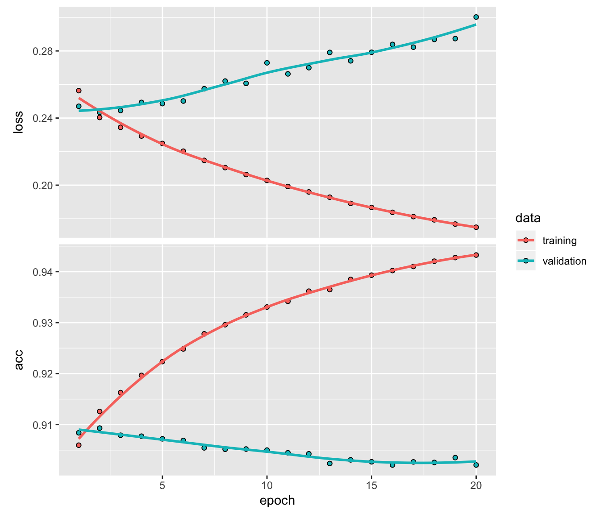

Yardstick packagelibrary(keras)
library(lime)
library(tidyquant)
library(rsample)
library(recipes)
library(yardstick)
library(corrr)
library(data.table)path_to_train <- "train.csv"
train <- fread(file = path_to_train)
train[1:10,1:14] %>%
mutate(target = as.factor(target))FALSE ID_code target var_0 var_1 var_2 var_3 var_4 var_5 var_6
FALSE 1 train_0 0 8.9255 -6.7863 11.9081 5.0930 11.4607 -9.2834 5.1187
FALSE 2 train_1 0 11.5006 -4.1473 13.8588 5.3890 12.3622 7.0433 5.6208
FALSE 3 train_2 0 8.6093 -2.7457 12.0805 7.8928 10.5825 -9.0837 6.9427
FALSE 4 train_3 0 11.0604 -2.1518 8.9522 7.1957 12.5846 -1.8361 5.8428
FALSE 5 train_4 0 9.8369 -1.4834 12.8746 6.6375 12.2772 2.4486 5.9405
FALSE 6 train_5 0 11.4763 -2.3182 12.6080 8.6264 10.9621 3.5609 4.5322
FALSE 7 train_6 0 11.8091 -0.0832 9.3494 4.2916 11.1355 -8.0198 6.1961
FALSE 8 train_7 0 13.5580 -7.9881 13.8776 7.5985 8.6543 0.8310 5.6890
FALSE 9 train_8 0 16.1071 2.4426 13.9307 5.6327 8.8014 6.1630 4.4514
FALSE 10 train_9 0 12.5088 1.9743 8.8960 5.4508 13.6043 -16.2859 6.0637
FALSE var_7 var_8 var_9 var_10 var_11
FALSE 1 18.6266 -4.9200 5.7470 2.9252 3.1821
FALSE 2 16.5338 3.1468 8.0851 -0.4032 8.0585
FALSE 3 14.6155 -4.9193 5.9525 -0.3249 -11.2648
FALSE 4 14.9250 -5.8609 8.2450 2.3061 2.8102
FALSE 5 19.2514 6.2654 7.6784 -9.4458 -12.1419
FALSE 6 15.2255 3.5855 5.9790 0.8010 -0.6192
FALSE 7 12.0771 -4.3781 7.9232 -5.1288 -7.5271
FALSE 8 22.3262 5.0647 7.1971 1.4532 -6.7033
FALSE 9 10.1854 -3.1882 9.0827 0.9501 1.7982
FALSE 10 16.8410 0.1287 7.9682 0.8787 3.0537target logical value (0,1), which 1 corresponds to a costumers that get transaction and 0, as No.test <- fread(file = "test.csv")
test[1:10,1:14]FALSE ID_code var_0 var_1 var_2 var_3 var_4 var_5 var_6
FALSE 1: test_0 11.0656 7.7798 12.9536 9.4292 11.4327 -2.3805 5.8493
FALSE 2: test_1 8.5304 1.2543 11.3047 5.1858 9.1974 -4.0117 6.0196
FALSE 3: test_2 5.4827 -10.3581 10.1407 7.0479 10.2628 9.8052 4.8950
FALSE 4: test_3 8.5374 -1.3222 12.0220 6.5749 8.8458 3.1744 4.9397
FALSE 5: test_4 11.7058 -0.1327 14.1295 7.7506 9.1035 -8.5848 6.8595
FALSE 6: test_5 5.9862 -2.2913 8.6058 7.0685 14.2465 -8.6761 4.2467
FALSE 7: test_6 8.4624 -6.1065 7.3603 8.2627 12.0104 -7.2073 4.1670
FALSE 8: test_7 17.3035 -2.4212 13.3989 8.3998 11.0777 9.6449 5.9596
FALSE 9: test_8 6.9856 0.8402 13.7161 4.7749 8.6784 -13.7607 4.3386
FALSE 10: test_9 10.3811 -6.9348 14.6690 9.0941 11.9058 -10.8018 3.4508
FALSE var_7 var_8 var_9 var_10 var_11 var_12
FALSE 1: 18.2675 2.1337 8.8100 -2.0248 -4.3554 13.9696
FALSE 2: 18.6316 -4.4131 5.9739 -1.3809 -0.3310 14.1129
FALSE 3: 20.2537 1.5233 8.3442 -4.7057 -3.0422 13.6751
FALSE 4: 20.5660 3.3755 7.4578 0.0095 -5.0659 14.0526
FALSE 5: 10.6048 2.9890 7.1437 5.1025 -3.2827 14.1013
FALSE 6: 14.7632 1.8790 7.2842 -4.9194 -9.1869 14.0581
FALSE 7: 13.0809 -4.3004 6.3181 3.3959 -2.0205 13.7682
FALSE 8: 17.8477 -4.8068 7.4643 4.0355 1.6185 14.1455
FALSE 9: 14.5843 2.5883 7.2215 9.3750 8.4046 14.3322
FALSE 10: 20.2816 -1.4112 6.7401 0.3727 -4.1918 14.0862target column depending on 200 double values.We can remove the first column ID_code and check for NA cases. deep learning model needs descrotized factor variables as target. We need to convert it to 0/1 as numeric.
train_tbl <- train %>%
select(-ID_code) %>%
mutate(target = target %>% as.character() %>% as.numeric()) %>%
drop_na()
train_tbl[1:14, 1:10]## target var_0 var_1 var_2 var_3 var_4 var_5 var_6 var_7
## 1 0 8.9255 -6.7863 11.9081 5.0930 11.4607 -9.2834 5.1187 18.6266
## 2 0 11.5006 -4.1473 13.8588 5.3890 12.3622 7.0433 5.6208 16.5338
## 3 0 8.6093 -2.7457 12.0805 7.8928 10.5825 -9.0837 6.9427 14.6155
## 4 0 11.0604 -2.1518 8.9522 7.1957 12.5846 -1.8361 5.8428 14.9250
## 5 0 9.8369 -1.4834 12.8746 6.6375 12.2772 2.4486 5.9405 19.2514
## 6 0 11.4763 -2.3182 12.6080 8.6264 10.9621 3.5609 4.5322 15.2255
## 7 0 11.8091 -0.0832 9.3494 4.2916 11.1355 -8.0198 6.1961 12.0771
## 8 0 13.5580 -7.9881 13.8776 7.5985 8.6543 0.8310 5.6890 22.3262
## 9 0 16.1071 2.4426 13.9307 5.6327 8.8014 6.1630 4.4514 10.1854
## 10 0 12.5088 1.9743 8.8960 5.4508 13.6043 -16.2859 6.0637 16.8410
## 11 0 5.0702 -0.5447 9.5900 4.2987 12.3910 -18.8687 6.0382 14.3797
## 12 0 12.7188 -7.9750 10.3757 9.0101 12.8570 -12.0852 5.6464 11.8370
## 13 0 8.7671 -4.6154 9.7242 7.4242 9.0254 1.4247 6.2815 12.3143
## 14 1 16.3699 1.5934 16.7395 7.3330 12.1450 5.9004 4.8222 20.9729
## var_8
## 1 -4.9200
## 2 3.1468
## 3 -4.9193
## 4 -5.8609
## 5 6.2654
## 6 3.5855
## 7 -4.3781
## 8 5.0647
## 9 -3.1882
## 10 0.1287
## 11 -0.4711
## 12 1.2953
## 13 5.6964
## 14 1.1064set.seed(100)
train_test_split <- rsample::initial_split(train_tbl, prop = 0.8)
train_test_split## <160001/39999/200000>We can retrieve our training and testing sets using training() and testing() functions.
# Retrieve train and test sets
train_8 <- rsample::training(train_test_split)
test_2 <- rsample::testing(train_test_split)
train_8[1:10, 1:14]## target var_0 var_1 var_2 var_3 var_4 var_5 var_6 var_7
## 2 0 11.5006 -4.1473 13.8588 5.3890 12.3622 7.0433 5.6208 16.5338
## 3 0 8.6093 -2.7457 12.0805 7.8928 10.5825 -9.0837 6.9427 14.6155
## 4 0 11.0604 -2.1518 8.9522 7.1957 12.5846 -1.8361 5.8428 14.9250
## 6 0 11.4763 -2.3182 12.6080 8.6264 10.9621 3.5609 4.5322 15.2255
## 8 0 13.5580 -7.9881 13.8776 7.5985 8.6543 0.8310 5.6890 22.3262
## 9 0 16.1071 2.4426 13.9307 5.6327 8.8014 6.1630 4.4514 10.1854
## 11 0 5.0702 -0.5447 9.5900 4.2987 12.3910 -18.8687 6.0382 14.3797
## 12 0 12.7188 -7.9750 10.3757 9.0101 12.8570 -12.0852 5.6464 11.8370
## 13 0 8.7671 -4.6154 9.7242 7.4242 9.0254 1.4247 6.2815 12.3143
## 14 1 16.3699 1.5934 16.7395 7.3330 12.1450 5.9004 4.8222 20.9729
## var_8 var_9 var_10 var_11 var_12
## 2 3.1468 8.0851 -0.4032 8.0585 14.0239
## 3 -4.9193 5.9525 -0.3249 -11.2648 14.1929
## 4 -5.8609 8.2450 2.3061 2.8102 13.8463
## 6 3.5855 5.9790 0.8010 -0.6192 13.6380
## 8 5.0647 7.1971 1.4532 -6.7033 14.2919
## 9 -3.1882 9.0827 0.9501 1.7982 14.0654
## 11 -0.4711 7.3198 4.6603 -14.0548 13.9059
## 12 1.2953 6.8093 -6.1501 -5.4925 13.6713
## 13 5.6964 6.0197 5.2524 -4.5162 14.1985
## 14 1.1064 8.6978 2.3287 -11.3409 13.7999Artificial Neural Networks are best when the data is one-hot encoded, scaled and centered.
# train_8 %>%
# mutate(target = target %>% as.factor() %>% as.numeric()) %>%
# correlate() %>%
# focus(target) %>%
# fashion() %>%
# arrange(desc(target))log1p correlation# train_8 %>%
# select(target, var_81, var_139, var_12, var_6, var_2, var_22) %>%
# mutate(target = target %>% as.factor() %>% as.numeric(),
# log_var81 = log(var_81),
# log_var139 = log(var_139),
# log_var12 = log(var_12),
# log_var6 = log(var_6),
# log_var2 = log(var_2),
# log_var22 = log(var_22)
# ) %>%
# correlate(use = "pairwise.complete.obs") %>%
# focus(target) %>%
# fashion() %>%
# arrange(desc(target))A new package, recipes, makes creating ML data preprocessing workflows a breeze!
# Create recipe
rec_obj <- recipe(target ~ ., data = train_8) %>%
# All non-numeric data will need to be converted to dummy variables.
#step_dummy(all_nominal(), -all_outcomes()) %>%
# mean center the data
step_center(all_predictors(), -all_outcomes()) %>%
# scale the data
step_scale(all_predictors(), -all_outcomes()) %>%
prep(data = train_8)
rec_obj## Data Recipe
##
## Inputs:
##
## role #variables
## outcome 1
## predictor 200
##
## Training data contained 160001 data points and no missing data.
##
## Operations:
##
## Centering for var_0, var_1, var_2, var_3, var_4, ... [trained]
## Scaling for var_0, var_1, var_2, var_3, var_4, ... [trained]# Predictors
x_train_8 <- bake(rec_obj, new_data = train_8) %>% select(-target)
x_test_2 <- bake(rec_obj, new_data = test_2) %>% select(-target)
x_train_8[1:10, 1:14]## # A tibble: 10 x 14
## var_0 var_1 var_2 var_3 var_4 var_5 var_6 var_7 var_8 var_9
## <dbl> <dbl> <dbl> <dbl> <dbl> <dbl> <dbl> <dbl> <dbl> <dbl>
## 1 0.270 -0.622 1.19 -0.689 0.792 1.54 0.247 -0.00521 0.859 0.420
## 2 -0.682 -0.276 0.517 0.535 -0.305 -0.510 1.77 -0.566 -1.56 -1.31
## 3 0.125 -0.129 -0.668 0.194 0.929 0.412 0.503 -0.476 -1.84 0.549
## 4 0.262 -0.170 0.717 0.894 -0.0712 1.10 -1.01 -0.388 0.991 -1.29
## 5 0.948 -1.57 1.20 0.391 -1.49 0.751 0.326 1.69 1.43 -0.299
## 6 1.79 1.01 1.22 -0.570 -1.40 1.43 -1.10 -1.86 -1.04 1.23
## 7 -1.85 0.268 -0.427 -1.22 0.810 -1.75 0.729 -0.635 -0.226 -0.200
## 8 0.671 -1.57 -0.129 1.08 1.10 -0.891 0.277 -1.38 0.304 -0.613
## 9 -0.630 -0.737 -0.376 0.306 -1.27 0.826 1.01 -1.24 1.62 -1.25
## 10 1.87 0.796 2.28 0.261 0.658 1.40 -0.674 1.29 0.247 0.916
## # … with 4 more variables: var_10 <dbl>, var_11 <dbl>, var_12 <dbl>,
## # var_13 <dbl># Response variables for training and testing sets
y_train_vec <- train_8$target
y_test_vec <- test_2$target
y_train_vec[1:100]## [1] 0 0 0 0 0 0 0 0 0 1 0 0 0 0 0 0 0 0 0 0 0 0 0 0 1 0 0 0 0 0 0 0 0 0 0
## [36] 0 0 0 0 0 0 0 0 0 0 0 0 0 0 0 0 1 0 1 0 0 0 0 1 1 0 0 0 0 0 0 1 0 0 0
## [71] 0 0 0 0 0 0 0 0 0 0 0 0 0 0 0 0 0 0 0 1 1 0 0 0 0 0 0 0 0 0Hidden Layers: Hidden layers form the neural network nodes that enable non-linear activation using weights. The hidden layers are created using layer_dense(). We’ll add two hidden layers. We’ll apply units = 16, which is the number of nodes. We’ll select kernel_initializer = “uniform” and activation = “relu” for both layers. The first layer needs to have the input_shape = 35, which is the number of columns in the training set. Key Point: While we are arbitrarily selecting the number of hidden layers, units, kernel initializers and activation functions, these parameters can be optimized through a process called hyperparameter tuning that is discussed in Next Steps.
Dropout Layers: Dropout layers are used to control overfitting. This eliminates weights below a cutoff threshold to prevent low weights from overfitting the layers. We use the layer_dropout() function add two drop out layers with rate = 0.10 to remove weights below 10%.
Output Layer : The output layer specifies the shape of the output and the method of assimilating the learned information. The output layer is applied using the layer_dense(). For binary values, the shape should be units = 1. For multi-classification, the units should correspond to the number of classes. We set the kernel_initializer = “uniform” and the activation = “sigmoid” (common for binary classification).
Compile the model : The last step is to compile the model with compile(). We’ll use optimizer = “adam”, which is one of the most popular optimization algorithms. We select loss = “binary_crossentropy” since this is a binary classification problem. We’ll select metrics = c(“accuracy”) to be evaluated during training and testing. Key Point: The optimizer is often included in the tuning process.
# Building our Artificial Neural Network
model_keras <- keras_model_sequential()
model_keras %>%
# First hidden layer
layer_dense(
units = 100,
kernel_initializer = "uniform",
activation = "relu",
input_shape = ncol(x_train_8)) %>%
# Dropout to prevent overfitting
layer_dropout(rate = 0.1) %>%
# Second hidden layer
layer_dense(
units = 50,
kernel_initializer = "uniform",
activation = "relu") %>%
# Dropout to prevent overfitting
layer_dropout(rate = 0.1) %>%
# Second hidden layer
layer_dense(
units = 50,
kernel_initializer = "uniform",
activation = "relu") %>%
# Dropout to prevent overfitting
layer_dropout(rate = 0.1) %>%
# Output layer
layer_dense(
units = 1,
kernel_initializer = "uniform",
activation = "sigmoid") %>%
# Compile ANN
compile(
optimizer = 'adam',
loss = 'binary_crossentropy',
metrics = c('accuracy')
)
keras_modelFALSE function (inputs, outputs = NULL)
FALSE {
FALSE keras$models$Model(inputs = unname(inputs), outputs = unname(outputs))
FALSE }
FALSE <bytecode: 0x7fb12491abc0>
FALSE <environment: namespace:keras>We use the fit() function to run the ANN on our training data. * The batch_size = 500 sets the number samples per gradient update within each epoch. * We set epochs = 10 to control the number training cycles. Typically we want to keep the batch size high since this decreases the error within each training cycle (epoch). * We also want epochs to be large, which is important in visualizing the training history (discussed below). * We set validation_split = 0.30 to include 30% of the data for model validation, which prevents overfitting.
# Fit the keras model to the training data
history <- fit(
object = model_keras,
x = as.matrix(x_train_8),
y = y_train_vec,
batch_size = 26,
epochs = 20,
validation_split = 0.30
)We can inspect the training history. We want to make sure there is minimal difference between the validation accuracy and the training accuracy.
# Print a summary of the training history
print(history)## Trained on 112,000 samples, validated on 48,001 samples (batch_size=26, epochs=20)
## Final epoch (plot to see history):
## acc: 0.9433
## loss: 0.1749
## val_acc: 0.9021
## val_loss: 0.3002# Plot the training/validation history of our Keras model
plot(history)
# Predicted Class
keras_class_vec <- predict_classes(object = model_keras, x = as.matrix(x_test_2)) %>% as.vector()
# Predicted Class Probability
keras_prob_vec <- predict_proba(object = model_keras, x = as.matrix(x_test_2)) %>% as.vector()Yardstick package# Format test data and predictions for yardstick metrics
estimates_keras_tbl <- tibble(
Truth = as.factor(y_test_vec) %>% fct_recode(yes = "1", no = "0"),
Estimate = as.factor(keras_class_vec) %>% fct_recode(yes = "1", no = "0"),
Class_prob = keras_prob_vec
)
estimates_keras_tbl## # A tibble: 39,999 x 3
## Truth Estimate Class_prob
## <fct> <fct> <dbl>
## 1 no no 0.0519
## 2 no no 0.0200
## 3 no no 0.104
## 4 no no 0.0117
## 5 no no 0.110
## 6 no no 0.0592
## 7 no no 0.00751
## 8 no no 0.0990
## 9 no no 0.427
## 10 no no 0.0269
## # … with 39,989 more rows# Confusion Table
estimates_keras_tbl %>% conf_mat(Truth, Estimate)## Truth
## Prediction no yes
## no 35190 2869
## yes 927 1013# Accuracy
estimates_keras_tbl %>% metrics(Truth, Estimate)## # A tibble: 2 x 3
## .metric .estimator .estimate
## <chr> <chr> <dbl>
## 1 accuracy binary 0.905
## 2 kap binary 0.303We are getting roughly 91% accuracy.
AUC is often a good metric used to compare different classifiers and to compare to randomly guessing (AUC_random = 0.50). Our model has AUC = 0.85, which is much better than randomly guessing. Tuning and testing different classification algorithms may yield even better results.
# AUC
estimates_keras_tbl %>% yardstick::roc_auc(Truth, Class_prob)## # A tibble: 1 x 3
## .metric .estimator .estimate
## <chr> <chr> <dbl>
## 1 roc_auc binary 0.796Precision is when the model predicts “yes”, how often is it actually “yes”. Recall (also true positive rate or specificity) is when the actual value is “yes” how often is the model correct. We can get precision() and recall() measurements using yardstick.
# Precision
data.frame(
precision = estimates_keras_tbl %>% precision(Truth, Estimate),
recall = estimates_keras_tbl %>% recall(Truth, Estimate)
)## precision..metric precision..estimator precision..estimate
## 1 precision binary 0.924617
## recall..metric recall..estimator recall..estimate
## 1 recall binary 0.9743334We find a precision: 0.6, and recall: 0.25.
Precision and recall are very important to the business case: The organization is concerned with balancing the cost of targeting and retaining customers at risk of leaving with the cost of inadvertently targeting customers that are not planning to leave (and potentially decreasing revenue from this group). The threshold above which to predict Target = 1 can be adjusted to optimize for the business problem.
We can also get the F1-score, which is a weighted average between the precision and recall. Machine learning classifier thresholds are often adjusted to maximize the F1-score. However, this is often not the optimal solution to the business problem.
# F1-Statistic
estimates_keras_tbl %>% f_meas(Truth, Estimate, beta = 1)## # A tibble: 1 x 3
## .metric .estimator .estimate
## <chr> <chr> <dbl>
## 1 f_meas binary 0.949# Predicted Class
keras_class_test_vec <- predict_classes(object = model_keras, x = as.matrix(test[,-1])) %>% as.vector()
# Predicted Class Probability
keras_prob_test_vec <- predict_proba(object = model_keras, x = as.matrix(test[,-1])) %>% as.vector()
table(keras_class_test_vec)## keras_class_test_vec
## 0
## 200000dt_submission <- data.frame(
ID_code = test[,1],
target = keras_class_test_vec,
Prob = keras_prob_test_vec
)#fwrite(dt_submission[,c(1,2)], "submission.csv")